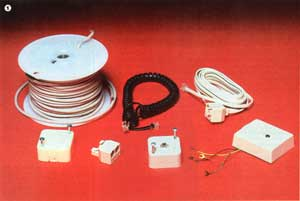

Install Your Own Telephone(S)!
You can save money and beat the system at the same time if you're willing to learn how to . . .
By TJ Byers
March/April 1984
On January 1, 1984, Bell Telephone (dear old Ma Bell) ceased to exist. Taking its place is an array of smaller companies that serve particular regions . . . in much the same fashion as was done back in the early days of "wired" communication. And, for all of us phone users, this breakup has several important consequences.
For one, we're nearly being forced to buy our own telephones. Oh sure, the old leasing arrangements are still being offered by AT&T, but the company seems to be doing its best to discourage such contracts by pricing them out of the market.
HIDDEN CHARGES
However, should you decide to buy your own phone and let the experts do the installation, you'll likely be in for a bit of a surprise. Beyond the standard hookup fee-which has always been around and will continue-"Son" or "Daughter" Bell is now permitted to charge you for coming into your home to wire or plug your telephone into the company's connection box.
Under the new guidelines, the firm's responsibility ends at its connector box. And the normal installation charge covers placing one such box at your residence, and that's all. The service fee for actually wiring your phones into it can run an additional $ 50 to $150!
Thanks be, you can do the installation work yourself. The same new rules that permit the phone company to charge for such a service also allow you to get along without their "personal" touch. Better yet, it's not difficult at all: I'm willing to bet that most anyone who's ever used a screwdriver can hook up a telephone!
WIRING A PHONE
Work begins in the phone company's terminal block, that little connector box that the service person left hanging on your wall. Inside it, you'll find four wires: a red, a yellow, a green, and a black (or white). These lines are your link to the telephone exchange office ... and to the outside world.
[EDITOR'S NOTE: Phone systems usually run on 50-volt, direct-current power, so you need not fear that you'll be harmed by shocks from the wires. If you do short the circuit, you'll definitely feel a tingle, but it won't be enough to cause any damage.]
Even though there are four wires supplied, you'll actually need to concern yourself with only two of them to make your phone work. The important circuits are usually the red and green ones, although some systems do use the yellow lead to supply current to the bell ringer inside the phone. The black (or white) wire is just a spare or, in relatively rare cases, a ground return. (In any event, you can ignore the black-or white-wire.)
Next, if you check the wires coming out of your telephone, you'll probably find that it also has four leads and that their color codes are identical to those in the connector box. Strip the insulation away from the wires carefully to avoid nicking the copper core. (Such damage can cause conductors to break when they're flexed.) Now, match the phone cord wires to those in the terminal block, loosen the clamping screws, insert each phone wire next to the appropriate connector-box lead, and tighten the screws. (If you put the new.wires to the left of the screws, they'll be more secure.)
In some cases, you'll find only two wires coming from the phone body, and they probably won't be color coded. Though this may look like a problem, it's actually an even easier-to-deal-with situation than is the four-wire setup. Just connect one wire to the junction block's red circuit and the other to the green . . . it doesn't even matter which goes to which!
And what about the yellow bell-ringer wire? Though it's usually not necessary to do so, go ahead and twist it together with the green one . . . just to be sure. (With that done, your phone will ring regardless of how the system is wired at the exchange.)
HELLO, OPERATOR?
At this point, you should be able to hear a dial tone when you lift the receiver. If not, it probably means that your local phone company (or a color-blind installer) has crossed some of the wires. Don't panic, though . . . it's usually easy to remedy the situation.
Begin by removing the green lead from the block and touching it against the yellow and the black (or white), one at a time, while listening for the tone. If that doesn't work, replace the green and try the same procedure with the red. Eventually, you should find a pair of wires that produce the desired effect and can then hook them up.
In the unlikely event that no combination produces a dial tone, there are only two possibilities: Either the phone company has a problem on its side of the terminal block, or you have a defective telephone. Try another phone first, and if that doesn't work, then call out the repair people. (Remember, though, that any work they do on your side of the terminal block will be billed to you.)
MODULAR PLUGS:A BETTER IDEA
Before AT&T was drawn and quartered, the company was working on a new system to streamline installation and increase reliability. The cornerstone of the approach is a standardized modular connector (also called the RJ-11) that allows telephones to be changed as easily as are table lamps.
Consequently, most phones available to day come equipped with modular plugs molded right onto the ends of their cords. If your home is already fitted with the appropriate outlets, installing your phone will be a matter of simply plugging in the fixture. But if you don't have modular outlets, don't despair . . . they're easy to put in.
Most phone centers and electronics outlets (Radio Shack, for example) sell conversion kits for a few dollars. In the package, you'll find a connector-block cover that's the same size and shape as the one that's currently installed. Remove the old cover, then remove the wires for any phones that are presently in place. The modular cover will have four wires-each with a spade terminal-that should be connected to the appropriate terminals on the connector block. Once again, the red and green wires (the two center ones inside the plug) are the important ones. After you've secured the leads, simply attach the new cover to your connector box, and you're in business. The phone's modular lead will snap into the outlet in the new cover.
EXTENSION PHONES
Would you like to install one or more extensions for convenience? No problem: Under the new law, you theoretically could have an extension in every room without being charged a dime extra by the phone company (unless, of course, you call out their service people to do the installations). All you'll need will be some phone wire (the four-conductor material costs about 10 cents a foot at phone centers or Radio Shack stores) and an extension terminal box, preferably of the modular type.
Start by running the new telephone wire from your main terminal block to the extension(s). To keep the cable(s) as short as possible, however, I recommend that you lay out your plans on paper first. (Basements and attics are ideal for concealing wires and for making short, direct runs.)
Secure the wire(s) to wooden parts of your house with round staples. These cost a little more than flat ones but won't pinch the wire(s) and, perhaps, short out the circuits. Place these fasteners at roughly three-foot intervals.
With the cable(s) secured, position each extension box so that it won't be exposed to damage from traffic, and go ahead and connect the color-coded wires. Back at the main terminal end, simply repeat the hookup procedure, and you're ready to plug in your extension phone(s).
In theory, you could put in as many phones as you like. However, the system isn't designed to drive more than three or four units in one house. The bell ringers consume quite a bit of power, you see, so if you have five or more phones connected to one main terminal, the exchange will have trouble ringing through.
ACCESSORIES
The new law has dramatically increased the competition in the telephone-accessory business. As a result, there's a wealth of new paraphernalia available. One of the best devices I've seen is the telephone extension cord, a four-conductor cable available in different lengths with modular connectors at both ends. If you don't like your phone's current location, or if you need more mobility, you can simply buy a longer cord and plug it in. There's even an extension coupler available. With this nifty device, you can connect two such cords together to increase their total length.
A modular adapter centsanother recently offered device-allows you to split one modular line into two outputs, so that you can add an extension phone without even opening the terminal box. Furthermore, many pieces of equipment that were formerly available only as expensive company services can now be installed by owners. (Wall plates, external ringers, and hold switches are just a few examples.)
PICKING OUT A PHONE
When you're shopping for telephones, you should be aware of a few facts.
First, and most important, there are two different kinds of telephones: the standard rotary (with the mechanical dial) and the Touch-Tone (with push buttons). Way back when the phone company started its campaign to make the operator obsolete, the rotary system was the standard.
The rotary dialer is actually a cam with a switch mounted next to it. You insert your finger in the hole corresponding to the number you want, spin until you run into the metal bar, and release the dial. A spring returns the dialer to its original position, and as it does, the cam attached to the dial shaft turns the switch on and off: The number of switch activations corresponds to the number you dialed. (You many have heard faint clicking when using this type of phone.) These switching actions send pulses along the lines to the exchange office, where a bank of relays is activated. This old standby system is called pulsedialing.
As the telephone network spread and grew, the phone company found that it needed a faster and more reliable method of dialing. The Touch-Tone system that AT&T invented to answer that call employs an audio frequency generator inside the phone that produces twelve different tones. When you push a button, the key-pad circuitry selects two of the available frequencies and sends them down the line. At the central office, a decoding circuit unscrambles the tones and converts them back to a number.
To date, not everyone has acquired a Touch-Tone phone, so the phone company has had to maintain pulse-dialing capabilities with the new system. Hence, a pulse dialer will still work anywhere!
However, the phone company hasn't added push-button capability to all their exchanges at this point, so you may not be able to use this newer system. (If you're not sure, just call your phone company.)
Some other things to check when you're buying a new or used phone include the condition and type of cord and connector. Is the cord in good shape, and-if not-can it be replaced easily? Does the connector match your system?
Also, all new phones that you install must be Federal Communications Commission-rated, so you should check for the sticker on the unit's underside. A used phone, such as one you might pick up at a swap meet, may be installed even though it was manufactured before the regulation went into effect and therefore has no sticker.
GOTTA GET A PRIVATE LINE
Some people may wonder how to go about opening their telephone up to key in their phone number. There's no need to: Your telephone number exists only at the phone company's central office-not at your house-so any phone you hook into the system will automatically have the right number.
The last thing to remember is that, as of the first of this year, you've assumed responsibility for your phone. If it goes on the fritz, it's your obligation to see that it gets fixed . . . by either you or a technician. For problems with the telephone itself, you may have to take the unit to a phone center, the place you bought it (if it offers service), or an independent shop (many television repair businesses are now servicing phones).
Above all, don't call the phone company to have them come take care of the problem . . . unless all else fails and you're prepared to pay a handsome price for the service!
FOUR-PRONG PLUGS
The phone company made an early attempt to standardize telephone wiring back before they developed the RY-11. The four-prong plug developed at that time did work, but it was only intermittently reliable and tended to be on the noisy side.
If you have such a system in your home now, you can use it. Accessories and re pair parts are still available, and you can even add four-prong extensions.
Should you wish to modernize your system by installing modular plugs, though, it's easy enough to do. The fastest way to do so is to stop by a phone center or electronics store and buy an adapter module. This relatively inexpensive plastic component was designed with a four-prong male plug on the bottom and a modular outlet on the top. (For the fussier installer, the four-prong outlet can be replaced by a. modular conversion kit, as described in the main text of this article.)
CATCH-22
Unfortunately, there are still a few local exchanges around the United States where none of the how-to approaches mentioned in this article apply. Most of these are located in New England and the Great Lakes region, and progress is slowly on its way. In the meantime, however, your best bet is to contact your local phone company for details on how to take the control of your phone system into your own hands.
|
 |
 |
|